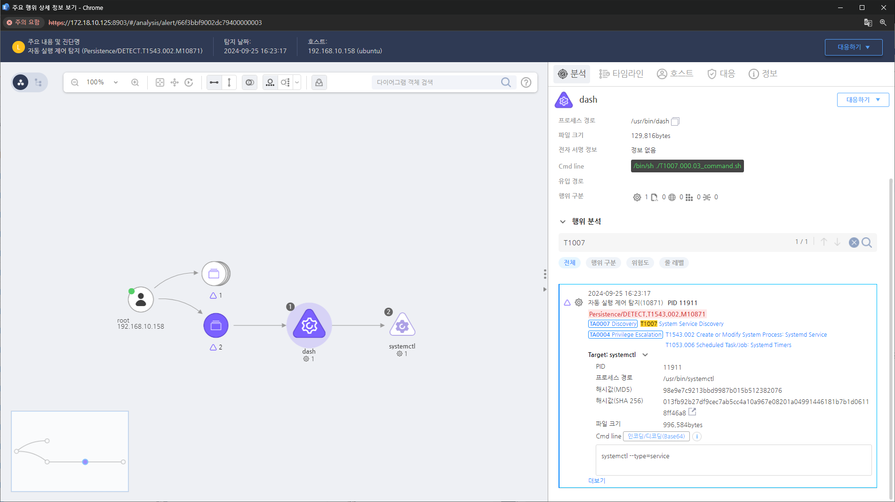

MITRE ATT&CK 액션을 기준으로 대응 방안을 작성
systemctl 명령을 탐지합니다. Action = "ProcessCreate" AND Cmdline = "systemctl" AND Cmdline != "systemctl show" OR "systemctl is-active" OR "systemctl is-system-running" OR "systemctl --version"

1.최소 권한 원칙 적용(Least Privilege) : 사용자가 필요한 최소 권한만 부여받도록 설정합니다. 이를 통해 공격자가 시스템 서비스 정보에 접근할 가능성을 줄입니다. 2. 로그 모니터링 : 비정상적인 서비스 검색 시도를 탐지하기 위해 시스템 및 네트워크 로그를 주기적으로 검토합니다. 3. 보안 설정 강화 : 불필요한 서비스나 포트를 비활성화하고, 필요한 서비스만 활성화하여 공격 표면을 줄입니다. 4. 프로세스 격리 및 필터링: 실행 파일 차단 목록 또는 애플리케이션 화이트리스트를 통해 시스템 서비스 검색 명령어의 실행을 제한할 수 있습니다.
Action 실행시 함꼐 영향을 받는 다른 Techniqes
| ATT&CK |
|---|
| T1007 |
| D3FEND |
|---|
| D3-SDM System Daemon Monitoring |